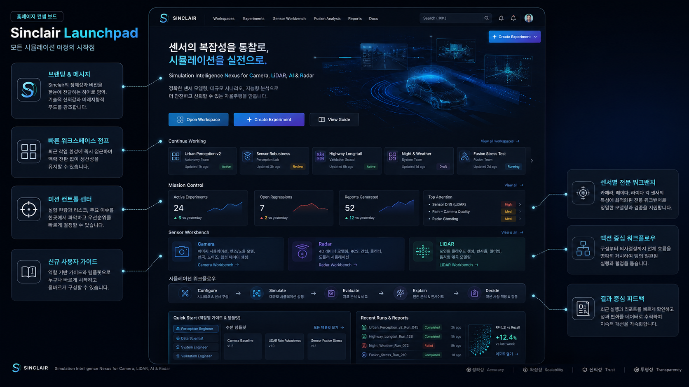
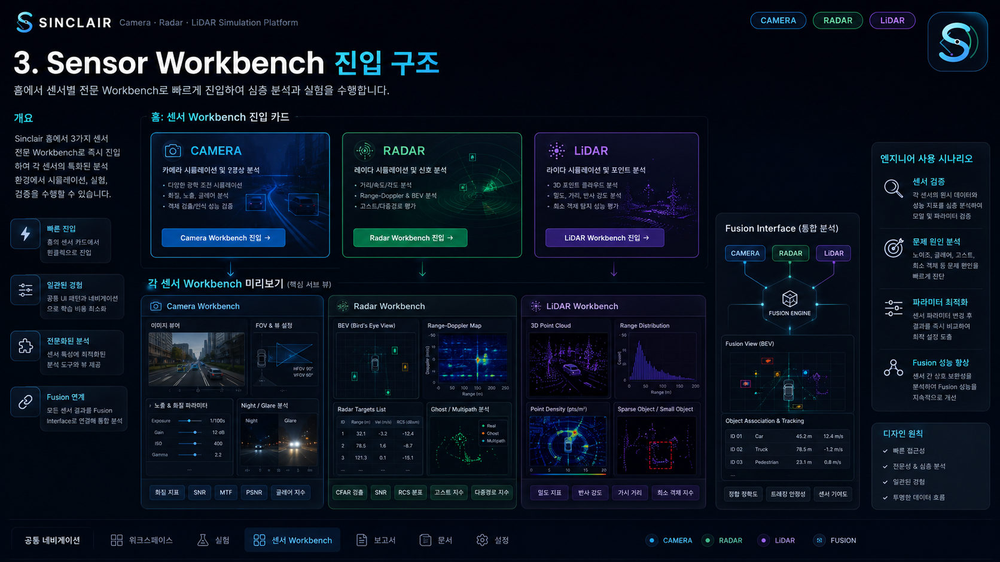
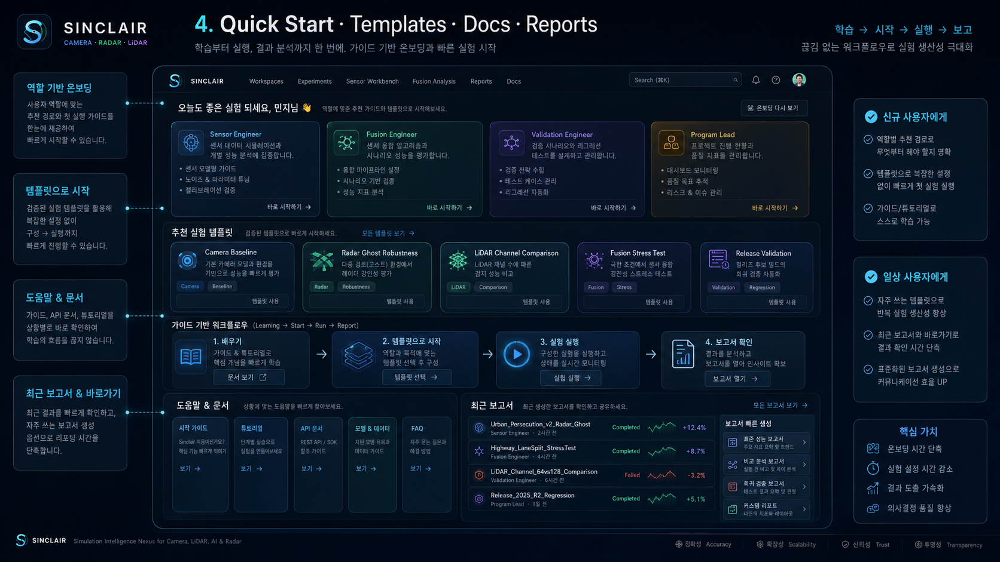
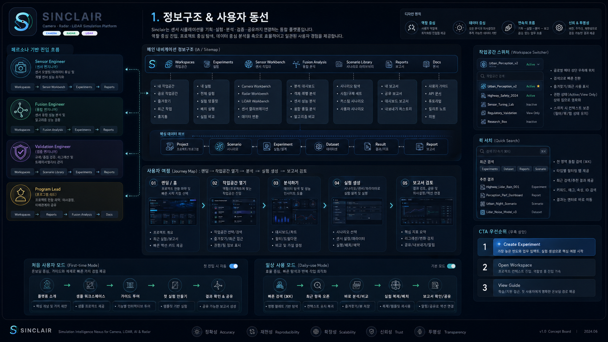
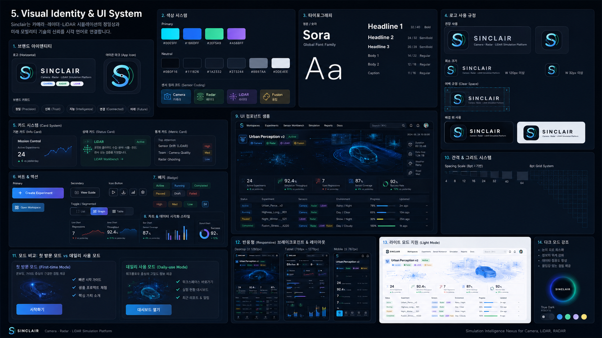
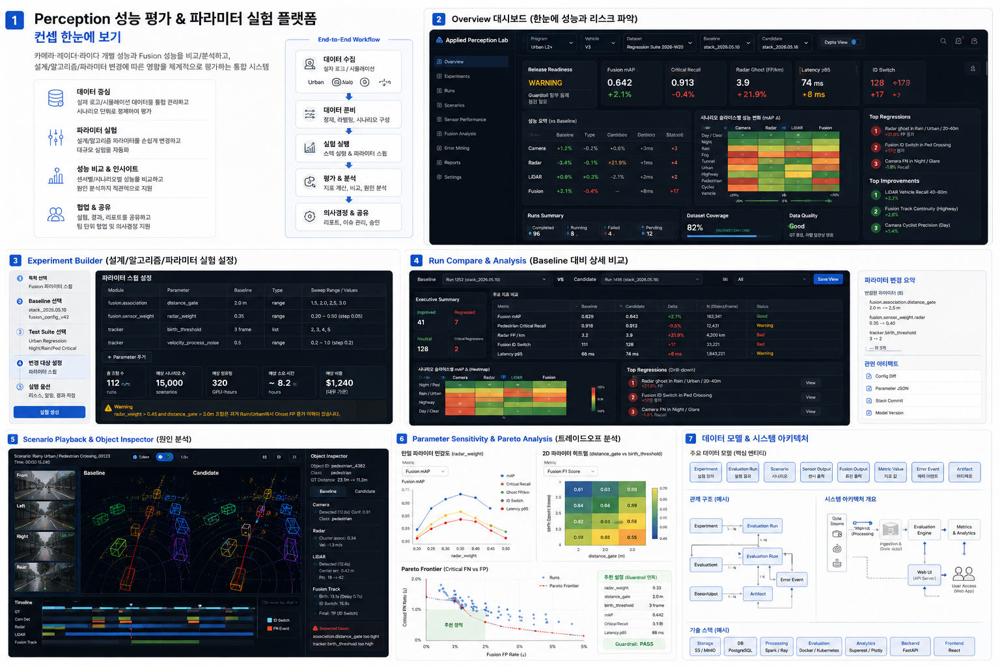

Launchpad + Mission Control
The main page is a working dashboard: understand Sinclair, return to recent workspaces, inspect active regressions, and jump into Camera, Radar, LiDAR, or Fusion workflows.

Top Attention
Camera Workbench
Design and validate camera spec, lens, sensor, ISP, calibration, perception, and fusion impact with explicit replay/simulation/physical validation badges.
Radar Workbench
Inspect RF, waveform, range-Doppler, CFAR, clustering, tracking, ghost/multipath failures, and radar-to-fusion contribution.
LiDAR Workbench
Validate 3D geometry quality, point density, vertical FOV, voxelization, ground segmentation, detection, tracking, and fusion geometry source role.
Core Workflow
Experiments
Experiment Builder, Run Monitor, Run Compare, and Parameter Sweep for platform-level validation.
Experiment Builder: 8 Step Flow
| 1. Workspace | V3 validation / release candidate branch | Done |
| 2. Sensor Rig | Front wide camera, front LRR, roof 64ch LiDAR | Done |
| 3. Scenario Suite | Urban night rain, highway cut-in, construction | Active |
| 4. Validation Mode | Replay + synthetic simulation + physical evidence flags | Review |
| 5. Parameters | FOV, CFAR Pfa, voxel size, fusion weights | Draft |
| 6. Guardrails | critical recall, false track, latency, bandwidth | Draft |
| 7. Run Plan | baseline vs candidate, sweep grid, saved artifacts | Draft |
| 8. Report | release, validation, experiment summaries | Draft |
Run Monitor
Run Compare: Baseline vs Candidate
| Metric | Baseline | Candidate | Delta |
|---|---|---|---|
| Fusion critical recall | 0.914 | 0.940 | +2.6% |
| Radar ghost false track | 0.031 | 0.047 | +1.6% |
| LiDAR center error p50 | 0.31 m | 0.23 m | -0.08 m |
| Camera night glare recall | 0.58 | 0.71 | +13 pts |
| End-to-end latency p95 | 82 ms | 96 ms | +14 ms |
Parameter Sweep Heatmap
Rows represent FOV / CFAR / voxel / fusion weight sweeps. Cells show guardrail status.
Sensor Workbench
Camera, Radar, and LiDAR workbenches share validation modes, data fidelity, scenario viewer, error analysis, fusion interface, and reports.
Camera Design & Validation
Lens PSF, MTF, sensor QE/noise, Macbeth response, ISP impact, FOV coverage, visibility, calibration, perception, and camera-to-fusion impact.
Radar Design & Validation
RF/waveform, antenna, range-Doppler, CFAR, point/cluster/track, ghost, multipath, velocity evidence, and radar-to-fusion contribution.
LiDAR Design & Validation
Channel count, vertical FOV, point density, ring health, ground segmentation, voxelization, 3D AP, tracking, and fusion geometry source role.
Resolved Camera Geometry
The main view does not ask users to choose FOV authority. It shows the resolved physical scene target, captured camera field, sensor sampling, and any mismatch warning.
Advanced geometry debug
FOV authority remains available for debugging only. Default resolution is automatic: lens assets own optical geometry; otherwise focal length plus sensor active width owns captured HFOV; scene size and distance only define target angular extent.
Lens Model & Overrides
Lens configuration is one ordered stack: Base Lens / Optics Model, then Lens Asset, then Numeric Overrides, then Optics / PSF Source. If a raytrace or catalog lens asset is selected, that asset owns focal length, F-number, FOV, transmittance, and PSF/aberration behavior. Numeric lens fields become locked reference metadata. The PSF source shows only the parameters that are actually consumed: diffraction has no extra knobs, Gaussian uses spread/XY ratio, wavefront defocus uses defocus, and raytrace PSF uses angular sampling from a .mat optics asset.
Sensor Model & Overrides
Sensor configuration is one ordered stack: Base Sensor Model, then Spectral/QE Asset, then Numeric Overrides. The base model loads the default sensor behavior, spectral assets modify CFA/IR/QE or full sensor files, and numeric controls override resolution, pixel pitch, exposure, gain, noise, QE scale, and bit depth.

Shared Workbench Tabs
Camera Failure Buckets
Radar Failure Buckets
LiDAR Failure Buckets
Fusion Analysis
Object-level attribution explains which sensor supplied class, position, velocity, and confidence, and why sensor outputs were accepted or rejected.
Sensor Contribution Matrix
| Scenario Slice | Camera | Radar | LiDAR | Fusion Outcome |
|---|---|---|---|---|
| Night rain pedestrian | Class source | Weak/no cluster | Position sparse | Late birth |
| Highway cut-in | Object class | Velocity source | Geometry source | Stable TP |
| Guardrail rain | No object | Ghost track | No support | False track |
| Construction cone | Low conf | No support | Small obstacle source | LiDAR-only TP |
class 0.91
velocity -6.1
position 0.21m
accepted
Object Inspector: pedestrian_4382
Object Evidence
Fusion Explanation
Scenario Library
ODD filters, scenario suites, coverage heatmaps, saved slices, and test plan readiness.
ODD Filters
Coverage Heatmap
Coverage cells combine weather, lighting, road structure, range bucket, and object class.
Urban Night Rain
Pedestrian crossing, glare, wet road reflection, sparse LiDAR points, camera HDR stress.
Highway Cut-in
Long-range radar velocity, adjacent lane separation, LiDAR box stability, fusion track continuity.
Construction Zone
Small obstacle, cone, low-height objects, ground segmentation, camera/radar weak support.
Reports
Release, validation, and experiment reports convert workbench evidence into reviewable decisions.
Release Readiness
Validation Evidence
Sign-off State

Docs
Role-based guides make the same platform usable for sensor engineers, validation engineers, fusion engineers, and program leads.
Camera Engineer
Lens PSF, MTF, FOV, sensor QE/noise, ISP trade-offs, calibration, and physical validation policy.
Radar Engineer
Waveform, antenna, CFAR, RCS, range-Doppler, ghost/multipath, and data fidelity levels.
LiDAR Engineer
Channel count, FOV, point rate, ring health, voxelization, ground segmentation, and 3D metrics.
Fusion Engineer
Association, contribution matrix, object attribution, accepted/rejected reasons, and conflict cases.
Validation Lead
ODD coverage, guardrails, regression, scenario slices, failure buckets, and release evidence.
Program Lead
Release readiness, trade-offs, sign-off workflow, top regressions, and decision summaries.
System / Assets
Visual identity, platform structure, typed mock contracts, and future integration seams for real simulation engines.


Typed Mock Contracts
Workspace Experiment EvaluationRun SensorType SensorConfig MetricDefinition MetricValue Scenario ErrorEvent FusionAttribution Report Template
Future Integration Seams
listWorkspaces() listRuns() getRunCompare() getWorkbenchState(sensor) getFusionAttribution(runId) listReports() Current: typed mock data + CameraE2E adapter Future: real simulation APIs, real detector adapters, database, scheduler, artifact storage, auth
